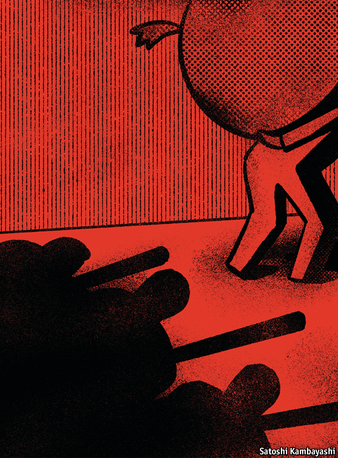

2020-12-15T08:13:03+00:00
Personal debt in China
中国的个人债务
中國的個人債務
Overdue action
逾期行动
逾期行動
Bad debts lead to even worse behaviour
坏帐导致更坏的行为
壞帳導致更壞的行為
DEBT-COLLECTION videos have become a popular subgenre on Chinese clip-sharing platforms. Many feature young men deftly fielding phone calls from aggressive collectors. Some portray the abuses—hair pulling, slapping—that have come to define a business that has long gone largely unregulated in China. The result has been a Wild West for collections. Debt collectors sometimes impersonate police officers; the details of debtors’ friends and family are sold so that they can be harassed. A swift rise in personal debt, though, is forcing regulators to act.
在中国的短视频分享平台上，追债视频已经成了一个热门类别。许多短片的主题都是年轻男子如何灵巧地应对咄咄逼人的追债人的电话。有些视频展示出的暴行——揪头发、扇耳光等——勾画出一个长期以来在中国基本上不受监管的行业。结果是追债就像“狂野西部”一样无法无天。追债人有时会冒充警察；债务人亲朋好友的个人信息被卖，他们因而受到骚扰。不过，个人债务的迅速增长正迫使监管机构采取行动。
在中國的短視頻分享平台上，追債視頻已經成了一個熱門類別。許多短片的主題都是年輕男子如何靈巧地應對咄咄逼人的追債人的電話。有些視頻展示出的暴行——揪頭髮、扇耳光等——勾畫出一個長期以來在中國基本上不受監管的行業。結果是追債就像“狂野西部”一樣無法無天。追債人有時會冒充警察；債務人親朋好友的個人信息被賣，他們因而受到騷擾。不過，個人債務的迅速增長正迫使監管機構採取行動。
Between 2015 and 2019 the stock of household debt in China rose by about $4.6trn, close to the $5.1trn accrued by Americans over a similar period before the global financial crisis of 2007-09, according to data from Rhodium Group, a consulting firm. The outstanding balance of delinquent consumer receivables could reach nearly 3.3trn yuan ($500bn) next year, up from just 1trn yuan in 2015, reckons iResearch, another consultancy.
咨询公司荣鼎咨询（Rhodium Group）的数据显示，2015年至2019年间，中国的家庭债务存量增加了约4.6万亿美元，接近美国人在2007年至2009年全球金融危机之前差不多长短的时间里累积的5.1万亿美元。另一家咨询公司艾瑞咨询（iResearch）估计，消费者应收账款拖欠余额明年可能接近3.3万亿元人民币，而2015年为1万亿元。
諮詢公司榮鼎諮詢（Rhodium Group）的數據顯示，2015年至2019年間，中國的家庭債務存量增加了約4.6萬億美元，接近美國人在2007年至2009年全球金融危機之前差不多長短的時間裡累積的5.1萬億美元。另一家諮詢公司艾瑞諮詢（iResearch）估計，消費者應收賬款拖欠餘額明年可能接近3.3萬億元人民幣，而2015年為1萬億元。
In June the southern city of Shenzhen drafted the country’s first personal bankruptcy law. Courts routinely heard disputes between lenders and borrowers, but allowed only creditors to file suits. The new law, to be rolled out next year, will offer debtors more protection against creditors. A few other cities are conducting similar experiments, though “these reforms are still very limited,” says Li Jiao of Buren, a law firm.
今年6月，深圳起草了中国第一部个人破产法。法院过去经常性地审理放款人和借贷者之间的纠纷，但只允许债权人提起诉讼。这部将于明年实施的新法规将让债务人在面对债权人时得到更多的保护。荷兰浩达律师事务所（Buren Legal）的焦丽表示，其他一些城市也有类似的尝试，尽管“这些改革还是很有限”。
今年6月，深圳起草了中國第一部個人破產法。法院過去經常性地審理放款人和借貸者之間的糾紛，但只允許債權人提起訴訟。這部將於明年實施的新法規將讓債務人在面對債權人時得到更多的保護。荷蘭浩達律師事務所（Buren Legal）的焦麗表示，其他一些城市也有類似的嘗試，儘管“這些改革還是很有限”。
The central bank, meanwhile, issued draft rules late last year, threatening to punish banks for working with dodgy debt collectors, though it softened the language before the guidelines took effect on November 1st this year. Government pressure, say industry executives, has prompted consolidation. Some companies, such as YX Asset Recovery, have banned in-person visits and operate only call centres—a practice considered less intrusive. YX, which had more than 10,000 agents last year, has sworn off practices including selling debtor information, impersonating government officials, and threatening violence.
与此同时，人行在去年年底发布了新规草案，威胁惩罚与不良追债公司合作的银行，尽管它在这一新规于今年11月1日施行之前软化了措辞。业内高管表示，来自政府的压力促进了行业整合。永雄资产管理集团等一些公司已禁止员工上门催收，只运营被认为侵扰性较小的呼叫中心。去年有一万多名催收员的永雄已承诺不会再使用贩卖债务人信息、冒充政府官员或是暴力威胁等手段。
與此同時，人行在去年年底發布了新規草案，威脅懲罰與不良追債公司合作的銀行，儘管它在這一新規於今年11月1日施行之前軟化了措辭。業內高管表示，來自政府的壓力促進了行業整合。永雄資產管理集團等一些公司已禁止員工上門催收，只運營被認為侵擾性較小的呼叫中心。去年有一萬多名催收員的永雄已承諾不會再使用販賣債務人信息、冒充政府官員或是暴力威脅等手段。
Yet the early reforms do not quite hit the mark. They have helped control debt collection for banks, but it is online lenders and microloan companies that pose a bigger risk. Delinquency rates have climbed above 30% this year at many nonbank lenders, compared to 5% for banks. Most online lenders are not targeted by the new rules and tend to hire local collections agencies that pursue aggressive, often-illegal tactics for recovering debts.
然而，这些早期改革并没有击中要害。它们有助于管控银行的追债操作，但构成更大风险的是网络贷款机构和小额贷款公司。今年，许多非银行贷款机构的拖欠率升至30%以上，而银行为5%。大多数网络贷款机构并不是这批新法规的整治对象，它们往往会雇用当地的催收机构，这些机构会采取激烈的、通常是非法的追债手段。
然而，這些早期改革並沒有擊中要害。它們有助於管控銀行的追債操作，但構成更大風險的是網絡貸款機構和小額貸款公司。今年，許多非銀行貸款機構的拖欠率升至30%以上，而銀行為5%。大多數網絡貸款機構並不是這批新法規的整治對象，它們往往會僱用當地的催收機構，這些機構會採取激烈的、通常是非法的追債手段。
Nor has the shift away from in-person visits eliminated debtor harassment. Physical threats seem to be being replaced by mediated forms of “emotional pressure”, applied during frequent phone calls, says Tom McDonald of the University of Hong Kong. Those seeking advice on how to deal with officious agents need look no further than the growing archive of debt-collection videos available online. ■
禁止上门追讨也并没有消除对债务人的骚扰。香港大学的汤姆·麦克唐纳（Tom McDonald）说，人身威胁似乎正被频繁致电这种非面对面的“情绪施压”所取代。那些想知道该怎么对付盛气凌人的催收员的人，只要看看网上越来越多的追债视频就行了。
禁止上門追討也並沒有消除對債務人的騷擾。香港大學的湯姆·麥克唐納（Tom McDonald）說，人身威脅似乎正被頻繁致電這種非面對面的“情緒施壓”所取代。那些想知道該怎麼對付盛氣凌人的催收員的人，只要看看網上越來越多的追債視頻就行了。